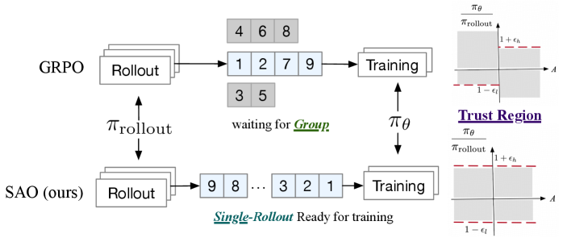
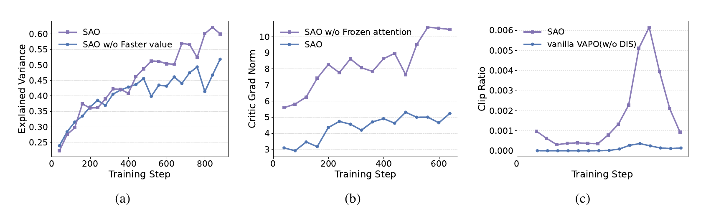
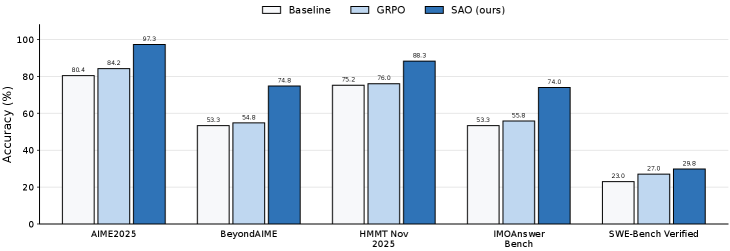
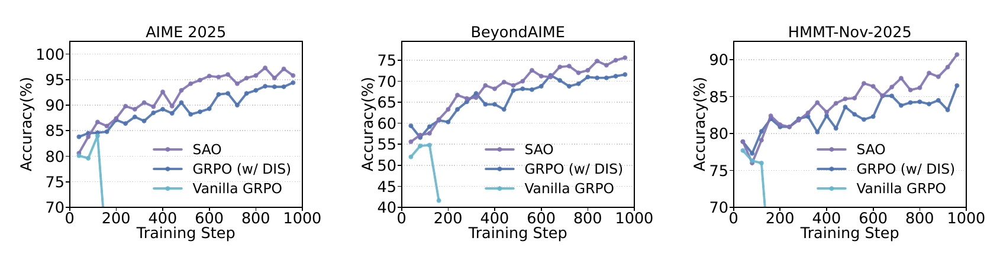
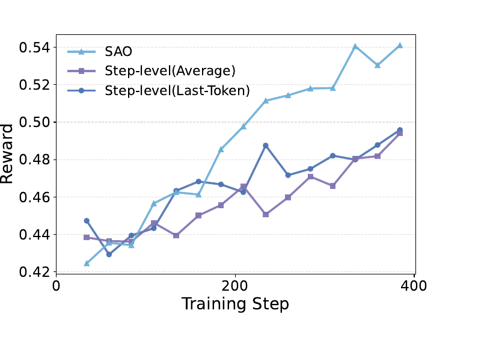
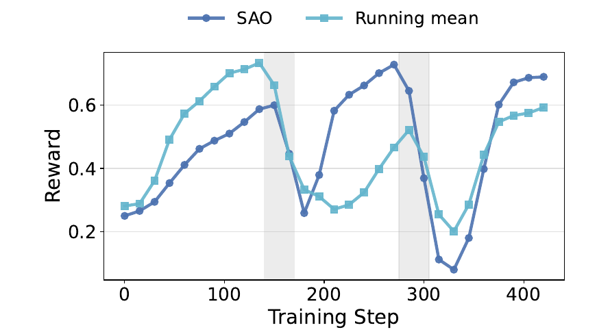

PAPER DEEP DIVE · ASYNC AGENTIC RL · 2026-07
取消分组等待之后，真正的瓶颈变成价值估计
SAO 把每个 prompt 的 8 条轨迹缩成 1 条，但没有把问题变简单：它用 token 级硬门控、一个追得更快的 critic，以及跨过 observation 的 GAE，换取异步长轨迹训练的稳定性。
单篇深读 · Zhenyu Hou, Yujiang Li, Jie Tang, Yuxiao Dong · arXiv:2607.07508v1
长轨迹 agent 的生成时间高度不齐。同步 RL 必须等同一批甚至同一 prompt 的所有 rollout 收齐，最慢的样本把整批训练拖成一道同步屏障。SAO 的出发点很直接：一条轨迹完成，就让它进入训练队列。
但等待消失后，数据会更快地变旧。每条轨迹可能来自不同版本的 rollout policy，而每个 prompt 只剩一次采样，GRPO 的组内相对基线也随之消失。论文真正值得读的地方，不是口号式的“异步更快”，而是它承认这种统计代价，并重新引入 critic 来控制方差。
读完这份报告，你应该能准确解释四件事：single-rollout 为什么不是 batch size 1；双边 DIS 为什么是“丢弃 token”而非普通裁剪；critic 为什么要 2:1 更新并冻结 attention；以及哪些结论来自实验，哪些仍只是合理的系统动机。
SAO 不是把 GRPO 的 group size 调成 1；它是用一个更重的价值估计系统，换掉 prompt 内分组带来的同步屏障。本文综合判断
第一章 · DESIGN TENSION
异步先消灭等待，再制造策略滞后
1 / prompt
SAO 的 rollout 数；训练 batch 仍为 128
~1000
论文训练曲线覆盖的最大 step 量级
+2.8–4.3 pp
SAO 相对 GRPO+DIS 的五项基准提升
同步 GRPO 对同一 prompt 采样一组响应，用组内奖励做相对优势估计。这个设计同时带来两个等待：短轨迹等长轨迹，整组数据等最慢成员。agentic coding 和 tool-use 的轨迹可长至多轮、甚至 128k token，等待会被长尾放大（论文 §1，PDF pp.2–3）。

图 1 SAO, Fig. 2, PDF p.3。上排 GRPO 要等组内轨迹齐备，下排 SAO 让完成的单条轨迹立即具备训练资格。应该注意：图说明了队列机制，却没有给出吞吐、GPU 利用率或墙钟收益。
概念纠偏single-rollout 指每个 prompt 只采一条轨迹（group size = 1），不是用一条轨迹做一次 SGD。论文的实际训练 batch size 是 128；GRPO 对照是 16 个 prompt × 8 条 rollout，同样得到 128 条轨迹（§4.1，PDF p.6）。
论文支持
分组确实会形成隐式同步点
Fig. 2 的执行顺序和方法描述清楚展示了组内等待为何存在。
我的综合
同步屏障被换成了统计负担
数据到达更自由，但 policy lag 更杂乱，且失去组内 baseline；系统问题被转化为 off-policy 校正与方差控制。
仍未证明
异步训练到底快多少
没有硬件、队列等待、rollout staleness 分布、样本丢弃率或端到端 wall-clock 实验。
第二章 · METHOD ANATOMY
一条轨迹如何穿过 SAO
把 SAO 看成一条数据管线更容易理解：它保存 rollout 时每个动作 token 的行为概率，让完成的轨迹进入异步队列；actor 用硬门控更新，critic 则负责把单样本优势估计的方差压下来。
01 · ROLLOUT
每个 prompt 生成一条 agent 轨迹
轨迹写成 T=[a₀,o₀,a₁,o₁,…]；a 是模型动作，o 是环境反馈。生成时保存每个动作 token 的 log π_rollout。
02 · QUEUE
完成即进入可训练队列
不再等待同 prompt 的其他样本，但论文没有披露队列成批、最大 staleness 或过旧样本丢弃规则。
03 · ADVANTAGE
critic 给 token 级状态估值
跨 turn 时从当前 action 末 token 直接连到下一 action 首 token，跳过非模型生成的 observation。
04 · UPDATE
actor 1 次，critic 2 次
actor 只接收 trust region 内 token 的梯度；critic 冻结 attention，仅更新 MoE projections。
05 · EVAL
更新后的 actor 配合 agent scaffold 评测
数学使用 Python tool-integrated reasoning；SWE-Bench Verified 使用 OpenHands，最多 300 个交互 turn。
| 环节 | SAO 的选择 | 解决的风险 | 新依赖 |
|---|
| 采样 | 每 prompt 1 条 rollout | 组内等待与滞后 | 失去组内相对 baseline |
| off-policy | 当前 policy / rollout policy 的 token 比率 | 不再维护历史 old-policy 集合 | 必须可靠保存 token log-prob |
| 优势估计 | token-level critic + skip-observation GAE | 单 rollout 的高方差、环境 token 噪声 | critic 精度与冷启动 |
| 优化 | 双边区间外直接 mask | 极端 policy divergence | 有效样本分布被筛选 |
| critic | K=2；冻结 attention | 价值网络追不上 actor、梯度过大 | 依赖 MoE 结构与预训练 attention 假设 |
这张表揭示了 SAO 的设计逻辑：它没有消除复杂度，而是把复杂度从“每个 prompt 多采几条”移动到“维护一个足够可靠的 token-level critic”。因此 full SAO 与 GRPO 的分数差不能直接解释成 single-rollout 本身的纯收益。
第三章 · OBJECTIVES
DIS 不是把比率截断，而是把越界 token 从梯度里删除
异步生成期间，训练 policy 可能已经更新多次。SAO 不再追踪一个可能不准确的 latest old policy，也不保存历史 checkpoint 集合；它直接把 rollout 引擎记录的行为概率当作分母（§3.1，PDF p.4）。
直接重要性比率（Eq. 2）
分子是当前训练 policy，分母是生成该 token 时的行为 policy。新意不在重要性采样本身，而在直接复用 rollout log-prob，省去 old-policy 推理与历史模型追踪。
双边硬门控（Eq. 3）
越界 token 的权重不是被压到边界，而是直接变成 0。与标准 PPO 按 advantage 正负选择性裁剪不同，SAO 对上下两侧都实施硬 mask。reasoning 设置的有效区间是 (0.7, 6.0)，coding 是 (0.2, 4.0)。
策略目标（Eq. 1）
只有 behavior 与 current policy 足够接近的 token 才贡献梯度，优势估计决定更新方向。论文没有明确 r_t 与门控函数 f 是否 stop-gradient；若完全按字面反传，梯度并不等同于标准 importance-weighted policy gradient，这是复现时必须澄清的歧义。
设计交换DIS 接受一种可控偏差：它不重建精确历史 policy，只用实际 rollout 概率识别“离当前 policy 太远”的 token。好处是实现更简单、训练更稳；代价是硬 mask 改变了有效训练分布，而论文只给出 clip-ratio 曲线，没有分析由此产生的选择偏差。
为什么 GAE 要跨过 observation
多轮 agent 轨迹交替包含模型动作 a 和环境反馈 o。模型并不生成 o；若把 action 末 token 与 observation 首 token 当成普通相邻状态，价值差会混入外部环境的随机性。SAO 把 Bellman 桥接点放到下一段 action 的首 token（§3.2，PDF p.5）。
Skip-Observation Token-level GAE（Eq. 4–5）
式子把当前 action 的末 token 直接连到下一 action 的首 token；关键动作是跨过整段 observation。论文没有说明 observation 间隔的 discount 计数、terminal 处理或 reward placement，也没有给出 skip 与 naive GAE 的直接消融。
第四章 · VALUE MODEL
single-rollout 能不能工作，取决于 critic 能不能追上 actor
GRPO 用同 prompt 的多条回报构造相对 baseline；SAO 取消组采样后，只能重新依赖参数化 value model。论文把单 rollout 的高方差问题，转化成 critic 的跟踪速度、训练稳定性和初始化质量问题。
更新频率
critic : actor = 2 : 1
每次 policy 更新对应 K=2 次 value 更新，目标是让 baseline 更快适配正在移动的 policy 分布。
参数冻结
冻结 attention，只训练 MoE projections
作者观察到 critic 的大梯度主要来自 full-attention 层，并假设预训练 attention 已能找到相关语义 token。
冷启动
扩大 value pretraining
作者称这是早期训练的关键，但没有披露数据规模、目标细节或 scaling ablation，证据最弱。

图 2 SAO, Fig. 4, PDF p.7。左：约 400 步后，K=2 的 SAO 与 K=1 基线在 explained variance 上拉开；中：冻结 attention 后 critic 梯度范数更低、更平滑；右：无 DIS 的 VAPO 几乎不 mask token，并在约 90 步崩溃。三幅都是单条训练曲线，没有训练 seed 方差。
| Ablation（Table 4） | AIME2025 | BeyondAIME | 相对完整 SAO |
|---|
| 完整 SAO | 97.3 | 74.8 | — |
| K=1（无 faster value） | 95.0 | 69.8 | −2.3 / −5.0 pp |
| 全参数 critic（不冻结 attention） | 90.6 | 74.5 | −6.7 / −0.3 pp |
| Vanilla VAPO（无 DIS） | 91.3 | 69.0 | −6.0 / −5.8 pp |
| Running-mean baseline | 79.8 | 55.3 | −17.5 / −19.5 pp |
消融最清楚地支持 K=2：BeyondAIME 下降 5.0 个百分点。冻结 attention 的结果则高度任务依赖，AIME 下降 6.7 点，BeyondAIME 只降 0.3 点。因此论文“每项设计都必要”的措辞应收窄为：这些设计在所报设置中共同有效，但不是每项都显示出跨任务一致收益。
第五章 · EVIDENCE AUDIT
最公平的比较不是 SAO 对 vanilla GRPO，而是 SAO 对 GRPO + DIS

图 3 SAO, Fig. 1, PDF p.1。五个任务上 SAO 都高于论文训练的 Qwen/GRPO 对照。图中 vanilla GRPO 的差距很大，但 DIS 本身已经解决了大量早期崩溃问题，所以归因时应优先看下表中的 GRPO+DIS。
| 基准 | GRPO + DIS | SAO | 绝对提升 |
|---|
| AIME2025 | 93.5 | 97.3 | +3.8 pp |
| BeyondAIME | 70.8 | 74.8 | +4.0 pp |
| HMMT Nov 2025 | 84.0 | 88.3 | +4.3 pp |
| IMOAnswerBench | 70.0 | 74.0 | +4.0 pp |
| SWE-Bench Verified | 27.0 | 29.8 | +2.8 pp |
数学结果来自 Table 1（PDF p.5），SWE-Bench 来自 Table 2（PDF p.6）。数学评测对 AIME / HMMT / IMO 做 16 次生成平均、BeyondAIME 做 4 次平均，但没有标准差或置信区间；SWE-Bench 未说明重复次数。训练本身也没有多 seed 曲线。

图 4 SAO, Fig. 3, PDF p.6。三个数学基准上 vanilla GRPO 都在约 160 步崩溃；GRPO+DIS 继续稳定训练。SAO 与 GRPO+DIS 前期接近，约 400 步后才逐渐拉开——这说明 DIS 更像“止住早崩”，完整 SAO 的额外价值才在长期训练中出现。
较强证据
DIS 改善训练稳定性
同 backbone、同 batch 的训练曲线显示 vanilla GRPO 早崩，而 GRPO+DIS 延伸到约 1000 步。
中等证据
完整 SAO 比 GRPO+DIS 更好
五项任务提升 2.8–4.3 点，但缺少训练 seed、置信区间和更广 backbone。
弱证据
single-rollout 本身提升泛化
主结果同时更换 critic、GAE、更新频率和冻结策略，没有只切 group size 的严格隔离。
第六章 · STRESS TEST
论文最好的负结果：把 token 平滑成 step，反而丢掉了 credit assignment
token-level value 看起来噪声更大，直觉上可以把一个 agent turn 聚合成一个 step，再把同一优势赋给 step 内全部 token。附录 A.1 真的做了两种实现：step 内 value 平均，以及只取最后一个 token。两者在相同 400 步训练下都落后。

图 5 SAO, Fig. 6, PDF p.13。token-level 训练在约 200 步后持续拉开。作者的解释是：step 级平滑虽然降低局部噪声，却抹掉了复杂推理轨迹内部的细粒度逻辑转折。
| 动作粒度（400 steps） | AIME2025 | BeyondAIME | 相对 token-level |
|---|
| Step-level（平均 token value） | 85.8 | 60.5 | −4.0 / −6.3 pp |
| Step-level（最后 token） | 87.3 | 62.8 | −2.5 / −4.0 pp |
| Token-level | 89.8 | 66.8 | — |
这是论文中隔离得最干净的机制结果之一：同样训练 400 步，改变的主要是动作/value 粒度。它支持 token 级 credit assignment，但不能替代 skip-observation GAE 的直接消融；后者仍然缺失。
在线学习模拟：一个有启发性的边界案例，不是真实部署验证

图 6 SAO, Fig. 5(b), PDF p.9。灰色区表示偏好切换；SAO 的状态相关 critic 通常比 128-reward running mean 更快恢复。第一次切换差异最清楚，第二次的优势较弱。无误差条、数据规模或人工校准报告。
模拟任务按阶段切换 cute、chuunibyou、classical 等写作风格偏好，由 GLM-4.7 同时判断质量与风格，二元奖励相乘。这个实验说明 single-rollout + critic 可以在受控非平稳信号下工作；它没有证明真实用户反馈中的在线适应，因为偏好变化是预设的，judge 未做人类一致性校准，隐私与安全问题也被留在附录。
第七章 · OPEN QUESTIONS
这篇论文证明了什么，又把什么留给了下一篇
| 主张 / 部件 | 已有证据 | 仍缺什么 |
|---|
| 异步效率 | Fig. 2 的执行机制 | wall-clock、吞吐、GPU 利用率、队列等待与 policy-lag 分布 |
| single-rollout 的纯收益 | 完整 SAO 胜 GRPO+DIS | 只切 group size、保持 critic/GAE/预算不变的隔离实验 |
| value pretraining scaling | 作者称对 cold start essential | 数据规模、目标、曲线和消融 |
| skip-observation GAE | 公式与机制解释 | 对 naive token GAE 的直接对照；terminal / discount / reward placement 细节 |
| 训练稳定性 | 单条曲线到约 1000 steps | 多 seed、置信区间、跨 backbone 与更长训练 |
| GLM-5.2 750B-A40B 部署 | 摘要中的一句陈述 | 配置、曲线、成本、稳定性与任务结果 |
| 可复现性 | 主要超参数与评测协议 | RL prompts / reward、优化器、γ、硬件、代码与 staleness 规则 |
作者明确边界实验集中在 Qwen3-30B-A3B、agentic reasoning、coding 和模拟在线写作。作者明确说结论未必迁移到小模型、非 agentic RLHF、密集奖励或短 rollout；部署还要求基础设施可靠保存 token-level behavior probability（Appendix B，PDF p.14）。
SAO 最可信的结论是什么？
在论文的 Qwen3-30B-A3B 长轨迹设置中，直接 token 级双边硬门控可以阻止若干异步基线早崩，而 group-size=1 要继续稳定训练，需要更强的 critic 设计。
它是否证明异步 RL 更高效？
没有。论文解释了为什么少等待，但没有报告任何端到端系统效率指标；“更高效”是合理动机，不是本论文的实证结论。
为什么不能把全部增益归给 single-rollout？
因为 full SAO 同时引入 DIS、参数化 critic、2:1 更新、冻结 attention、token-level skip-observation GAE 与 value pretraining，缺少只改变采样组大小的严格消融。
下一步最关键的实验是什么？
在相同生成预算和 actor-critic 配置下，系统扫描 group size、staleness 与硬门控阈值，同时报告有效 token 率、吞吐、训练 seed 方差和 wall-clock 性能。
实践者现在能带走什么？
若 agent rollout 极长且长尾明显，不要默认 GRPO 的 prompt 内分组仍是免费设计；但改成 single-rollout 前，先确认能保存准确 behavior log-prob，并有资源训练一个更新更快、粒度足够细的 critic。
更大的图景：异步 agentic RL 的核心不是让 actor 永远忙碌，而是让更快到达、也更快过时的数据，仍然能产生可信的学习信号。本文综合判断